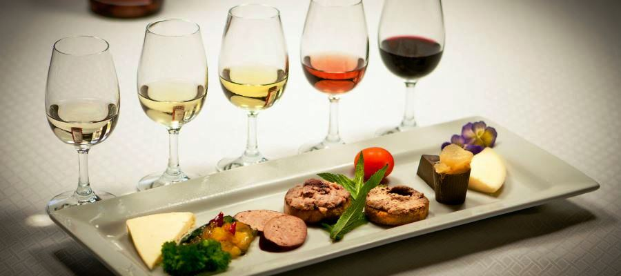

El mercado de la cerveza en Chile ha crecido de manera robusta en los últimos años. Así, si en 2014 se bebieron 748 millones de litros en el país, en 2019 la cifra aumentó a los 997 millones. Así encontramos también la creciente oportunidad de ligar esta bebida con la comida, en lo que conocemos como maridaje, aunque esta mezcla entre comida y alcohol es usualmente más relacionada al vino, la cerveza representa una excelente compañera para todo tipo de alimentos.
El maridaje es el proceso de unir un alimento con una bebida alcohólica a fin de realzar el placer de comerlos. El concepto principal tras el maridaje reside en que ciertos elementos que se encuentran en los alimentos y en el alcohol, como la textura y el sabor, reaccionan de manera diferente al mezclarse; y encontrar la combinación adecuada de estos hará del comer una experiencia más placentera para el paladar. La máxima del maridaje es crear sensaciones nuevas, tanto en la degustación del vino como de la comida con la que lo acompañamos.
En las siguientes imágenes podemos ver distintos tipos de cerveza, con los vasos asociados a cada tipo, que representan la tradición y mejor disfrute de la bebida, en conjunto con una ilustración de las comidas recomendadas para potenciar la experiencia de beber cada cerveza.
Trigo
Hefeweizens
Tulipa corta
Pilsners
Tulipa larga
Lagers
Nonic
Ales
Irlandés imperial
Blondes
Jarra
Stouts
En las siguientes secuencias podemos ver como se ligan y mezclan los sabores de la cerveza con los de la comida para un resultado más satisfactorio.


Qué le da sabor a la cerveza:
La malta es lo que le da el dulzor a la cerveza, el lúpulo proporciona el toque amargo y la carbonatación es la que da la espuma a la cerveza y permite limpiar el gusto entre los distintos sabores de comida. Las diversas concentraciones definen los distintos tipos de cerveza.


Lo que producen las mezclas de sabores:
Los sabores repetidos entre la cerveza y el alimento se combinan ya ninguno opaca al otro, sino que se adhieren y complementan, como por ejemplo, los sabores ácidos, amargos y salados. Estas mezclas producen calma, así como, la unión de amorgo y dulce y de acido y salado. Por otro lado, están los sabores contrastantes como lo dulce con lo acido o amargo, generando así una distinción entre ambos sabores.
A continuación, veremos un gráfico que muestra algunos ejemplos de como se puede combinar la cerveza con las distintas comidas.
Para los postres por ejemplo una buena combinación son las cervezas oscuras, como la Porter y la Stouts, esta ultima se potencia especialmente bien con el chocolate. Para los pescados y mariscos se recomiendan cervezas más claras, como la Blond o la Pale Ale. La Amber Ale en su caso es perfecta para comidas más grasosas como la pizza o las pastas, ya que la espuma de esta ayuda a limpiar el sabor grado de la boca .
Como conclusión vemos como para una misma cerveza existe más de una comida complementaria, por ende, para poder mezclarlas bien es importante tener conocimiento del sabor de cada cerveza y según su dulzor o amargor ver como se complementa con el sabor general de la comida.
